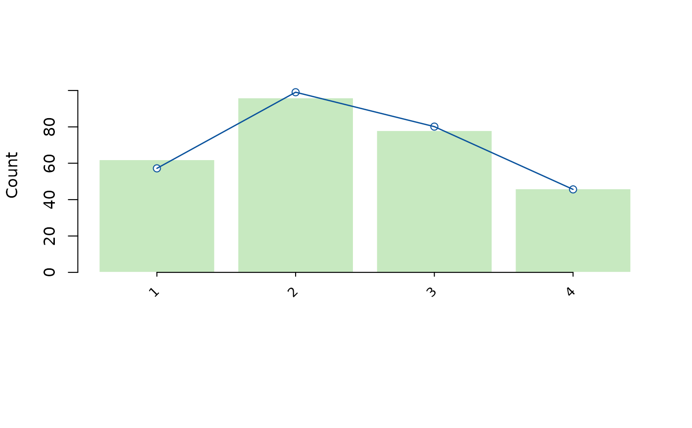

Build a rating-scale diagnostics report
Arguments
- fit
Output from
fit_mfrm().- diagnostics
Optional matching output from
diagnose_mfrm(). Stored step uncertainty and marginal-fit results are reused when supplied. Without diagnostics, only observed/plug-in category statistics and step points are calculated; no covariance or full diagnostic calculation is started.- whexact
Retained for call compatibility. Category ZSTD is unavailable because grouping by the observed category changes its reference distribution.
- drop_unused
If
TRUE, remove categories with zero count from the displayed category table. Usage totals still cover the full declared scale; unavailable counts remain visible, and score-support caveats are retained.
Value
A named list with:
category_table: counts, generating measures and descriptive residuals.AvgMeasureis the observed-category average oriented predictor;ExpectedMeasureweights all predictors by their category probabilities.AvgPersonMeasureandExpectedAverageretain distinct Person-only and predicted-score summaries. Category ZSTD and fit flags are NA: selecting by observed outcome destroys the universal unit-residual baseline.owner_category_table: unfiltered counts within each step ownermodel_context: model, estimator, step/slope owners and step scalenotes: interpretation outside the figurethreshold_table: model step/threshold estimates and stored uncertaintysummary: one-row summary with available/unavailable category counts and adjacent-threshold comparisons. Category-fit means identify their available denominators and describe displayed rows. Missing fit statistics/flags stayNA, including unused categories with no estimable category fit.category_usage: counts across the full scale, beforedrop_unusedthreshold_coverage: available, unavailable and decreasing adjacent-pair counts;NotApplicabledistinguishes binary scales from missing estimatescaveats: structured score-support warning/review rowsdiagnostic_mode: character scalar carried fromdiagnostics$diagnostic_mode("legacy","both", or"marginal_fit"); used by downstream reporting helpers to pick the correct expected-count basismarginal_fit: list bundle fromdiagnostics$marginal_fitwhen strict marginal fit was computed, otherwiseNULL. Carries the raw OverallRMSD / OverallMaxAbsStdResidual / per-cell tables that feed theMarginalOverallRMSDcolumns insummary.
Details
This helper provides category usage/fit statistics and threshold summaries
for reviewing score-category functioning.
category_table is a global observed-score screen. owner_category_table
retains every declared category within each level of the fitted step_facet
(or one Common family for RSM). Its percentages use that owner's total
weight. These are observed ratings, not independent Persons or planned
assignments. Missing categories alone cannot establish structural absence.
drop_unused only filters the global display; owner counts stay complete.
Typical checks:
sparse category usage (
Count,ExpectedCount)category fit (
Infit,Outfit,ZStd)threshold ordering within each
StepFacet(threshold_table$Estimate,GapFromPrev)
Interpreting output
Start with summary:
UsedCategoriesclose to totalCategoriessuggests that most score categories are represented in the observed data.very small
MinCategoryCountindicates potential instability.ThresholdMonotonic = FALSEindicates disordered thresholds within at least one threshold set. In PCM fits, inspectthreshold_tablebyStepFacetbefore drawing scale-wide conclusions.
Then inspect:
category_tablefor global category-level misfit/sparsity.threshold_tablefor adjacent-step gaps and ordering within eachStepFacet.
Stored diagnostics$parameter_uncertainty$steps are matched by threshold
family and step, with fitted estimates and source identity checked. Inspect
SE_Status, CIEligible, CIUse and UncertaintySourceStatus. Missing rows
remain unavailable; duplicate or mismatched keys are rejected. Older
diagnostics without a verifiable fitted-calibration identity must be
regenerated with diagnose_mfrm(fit, ...); model refitting is not required.
Reordering stored step rows does not change their keyed correspondence.
A bare fit supplies
step points with SE_Status = "not_supplied". A binary centered step has
no free within-owner contrast (fixed_by_step_centering).
Native thresholds here are centered step offsets. They are not full ability-axis crossings, cumulative-50% boundaries or decision cuts. An SE for a step does not include the covariance required for a crossing or an adjacent-step difference. Threshold disorder is descriptive, not an automatic category-merging rule. Two-family GPCM diagnostics remain unsupported by this helper; use its dedicated response/curve routes.
Typical workflow
Fit model:
fit_mfrm().Build diagnostics:
diagnose_mfrm().Run
rating_scale_table()and reviewsummary().Use
plot()to visualize category profile quickly.
Save the complete result to retain owner counts, uncertainty status and
notes. plot(out, type = "counts") shows global counts; use
plot(out, type = "thresholds") for the stored step points. Both support
as_ggplot() without recalculating values. Step figures do not draw stored
SEs as crossing, gap or curve intervals; inspect threshold_table separately.
Further guidance
For a plot-selection guide and a longer walkthrough, see
mfrmr_visual_diagnostics and
vignette("mfrmr-visual-diagnostics", package = "mfrmr").
Output columns
The category_table data.frame contains:
- Category
Score category value.
- Count, Percent
Observed count and percentage of total. With observation weights, counts are sums of weights, not independent sample sizes. Missing or invalid scores/weights make the usage counts unavailable.
- AvgMeasure, ExpectedMeasure
Observed-category mean oriented predictor and its model expectation, weighted by category probabilities across all retained observations.
- AvgPersonMeasure
Mean person measure for respondents in this category; distinct from the oriented predictor.
- ExpectedAverage
Mean predicted score among observations in this observed category; distinct from the expected generating measure.
- Infit, Outfit
Descriptive category residual mean squares.
- InfitZSTD, OutfitZSTD
Unavailable (NA); conditioning on the observed category does not preserve a universal unit-residual reference.
- ExpectedCount, DiffCount
Expected count and observed-expected difference.
- LowCount
Logical;
TRUEif count is below minimum threshold.- InfitFlag, OutfitFlag, ZSTDFlag
Unavailable (NA). Outcome-selected residual summaries do not have a universal unit baseline or calibrated ZSTD reference. Low-count and generating-measure warnings remain descriptive.
- ZeroCount, UnusedCategoryType, WeaklyIdentified, CategoryCaveat
Structured score-support caveats for retained zero-count categories.
The owner_category_table contains StepOwner (facet name), StepFacet
(level), Category (model score), CategoryLabel (original score), raw and
weighted counts (RawCount, Count), denominators (OwnerRatings,
OwnerWeight), Percent, ZeroCount and UsageStatus. Status distinguishes
observed, not observed, zero weight, no exposure and unavailable counts.
No-exposure counts are zero but percentages are unavailable.
The threshold_table data.frame contains:
- Step
Step label (e.g.,
Step_1,Step_2). UseLowerCategoryandUpperCategoryto identify the corresponding score transition.- Estimate
Estimated threshold/step difficulty (logits).
- StepOwner
Name of the facet owning the steps, or
Commonfor RSM.- StepFacet
Threshold family identifier when the fit uses facet-specific threshold sets.
- SE, CI_Lower, CI_Upper, SE_Status, CIEligible, CIUse
Stored step uncertainty and reporting status, without new inference.
- LowerCategoryLabel, UpperCategoryLabel
Original scores at the transition.
- LowerOwnerCount, UpperOwnerCount, OwnerSupportStatus
Weighted counts and support within this threshold owner, not pooled frequencies.
- GapFromPrev
Difference between adjacent numbered thresholds within the same
StepFacet. Missing thresholds are not skipped to form a gap. No automatic category-merging rule is applied.- ThresholdMonotonic
Logical flag repeated within each threshold set.
FALSErecords at least one decreasing adjacent pair;TRUErequires every expected pair to be available and nondecreasing, allowing numerical differences up tosqrt(.Machine$double.eps). Equal thresholds meet this descriptive condition. Otherwise the flag isNA. A binary scale has only one threshold and no applicable ordering comparison. This is a statement about point estimates, not a test of category adequacy.- LowerCategory, UpperCategory, WeaklyIdentified, ThresholdCaveat
Adjacent score-category support metadata. Thresholds adjacent to retained zero-count categories are flagged for cautious interpretation.
References
Andrich, D. (1978). A rating formulation for ordered response categories. Psychometrika, 43(4), 561-573. doi:10.1007/BF02293814
Masters, G. N. (1982). A Rasch model for partial credit scoring. Psychometrika, 47(2), 149-174. doi:10.1007/BF02296272
Linacre, J. M. (2002). What do Infit and Outfit, mean-square and standardized mean? Rasch Measurement Transactions, 16(2), 878. (Source for the 0.5-1.5 mean-square heuristic review interval; this is not a source for threshold-gap rules.)
Wind, S. A. (2023). Detecting rating scale malfunctioning with the partial credit model and generalized partial credit model. Educational and Psychological Measurement, 83(5), 953-983. doi:10.1177/00131644221116292 (Recent simulation evidence on PCM- and GPCM-based rating-scale diagnostics; useful for interpreting the
summary(t8)$summaryflags in theGPCMroute.)
Examples
library(mfrmr)
# Saved synthetic MML/RSM analysis of example_operational.
# For your own data, fit a model first; see ?fit_mfrm.
example_fit <- readRDS(system.file("examples", "operational-mml.rds", package = "mfrmr"))
fit <- example_fit$fit
# Review category use and the fitted transitions between scores
categories <- rating_scale_table(fit)
review <- summary(categories)
review$summary
#> Categories DisplayedCategories AvailableCategoryCounts
#> 1 4 4 4
#> UnavailableCategoryCounts UsedCategories UnusedScoreCategories
#> 1 0 4
#> WeaklyIdentifiedThresholds MinCategoryCount MaxCategoryCount
#> 1 0 46 96
#> MeanCategoryInfit AvailableCategoryInfit MeanCategoryOutfit
#> 1 1.079498 4 0.9991048
#> AvailableCategoryOutfit ThresholdMonotonic ThresholdComparisons
#> 1 4 TRUE 2
#> AvailableThresholdComparisons UnavailableThresholdComparisons
#> 1 2 0
#> ThresholdOrderNotApplicable DiagnosticMode ExpectedCountBasis
#> 1 FALSE legacy legacy_plugin
#> MarginalFitAvailable MarginalOverallRMSD MarginalMaxAbsStdResidual
#> 1 FALSE NA NA
#> MarginalFlaggedCategories MarginalClassifiedCategories
#> 1 NA 0
#> MarginalUnclassifiedCategories
#> 1 0
categories$model_context
#> Model Method StepOwner StepSelection SlopeOwner StepScale
#> 1 RSM MML Common not_applicable centered_step_offset
head(categories$owner_category_table)
#> StepOwner StepFacet Category CategoryLabel RawCount Count OwnerRatings
#> 1 Common Common 1 1 62 62 282
#> 2 Common Common 2 2 96 96 282
#> 3 Common Common 3 3 78 78 282
#> 4 Common Common 4 4 46 46 282
#> OwnerWeight Percent ZeroCount UsageStatus
#> 1 282 21.98582 FALSE observed
#> 2 282 34.04255 FALSE observed
#> 3 282 27.65957 FALSE observed
#> 4 282 16.31206 FALSE observed
# Bars show observed counts; the line shows model-expected counts
# Recreate saved tables with the original fit and diagnostics after updating.
plot(categories)
